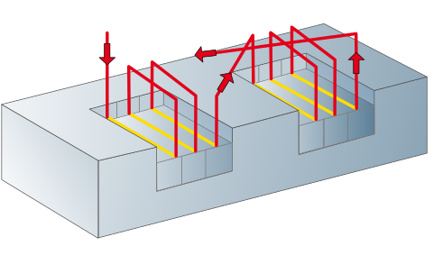
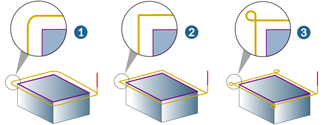

Strategy
Tool position
The right selection of the cutter position depends on the direction of the polyline (5).
Auto (1): The direction of the contour is automatically adjusted in such a way that machining always takes place using climb milling.
Left (2), Right (3): Machining with path compensation.
On contour (4): The cutter moves directly on the contour. Machining takes place without path compensation.
Infeed
Oneway (1): Machining is always performed in the same direction.
Zigzag (2): Machining with alternating orientation.
 |
Zag feedrate (fact.): Feedrate reduction of the counter movement by one factor value when machining with zigzag infeed.
Machining priority
Depth (A): Each contour is fully machined in accordance with the defined vertical stepdown and while taking account of the top and bottom (1). The system then switches to the next contour (2).
Plane (B): In every plane, the stock allowance will be completely removed in multiple horizontal stepovers, followed by a vertical stepdown to the next machining plane.
 |
Global plane: If there are several contours, a horizontal plane is first processed for all contours (cross-contour), followed by a stepover to the next plane. Prerequisite: All contours have the same top and bottom.
|  |
Interior corners
Fillet interior corners: Smooth filleting (rounding) of internal milling paths at the corners of contour pockets or islands.
Reduce corner feedrate: Interior corners are machined at the reduced feedrate. Interior corners are contour segments with an angle of less than 120°.
Combining the Fillet interior corners and Trim to milling area options (Boundary tab) may result in interior corners not being machined completely.
(1) Fillet interior corners enabled, Trim to milling area disabled.
(2) Fillet interior corners enabled, Trim to milling area enabled.
Edge behavior
Defines the behavior of the tool at the outer edges of a model (not available for the On contour tool position).
Roll (standard) (1): Edge rolling (standard behavior also for 2D Contour Milling).
Extend (2): Tangential extension on the edges.
Loop (3): Loop-like extension and threading at edges. Define the Corner radius.
|  |
Break edge: Use the Chamfer option (1) to chamfer the edges or the Rounding option (2) to round the edge.
Length: Length of the chamfer or fillet.
Max. corner angle: Maximum angle between two contour elements up to which the edge is to be broken.

Example: Edge angle on the component: 150°, Max. corner angle defined: 130°. Edge is not broken, all edges less than or equal to 130° are broken.